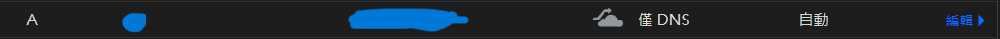
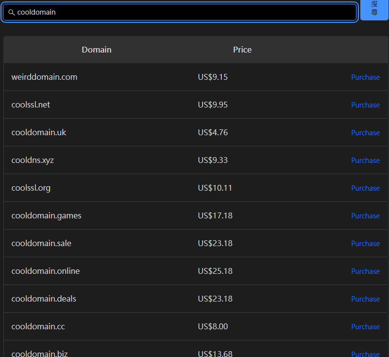
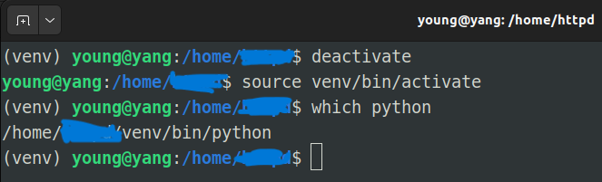
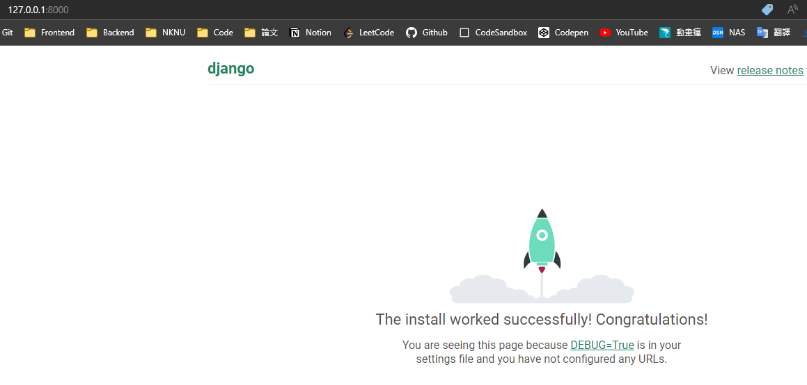
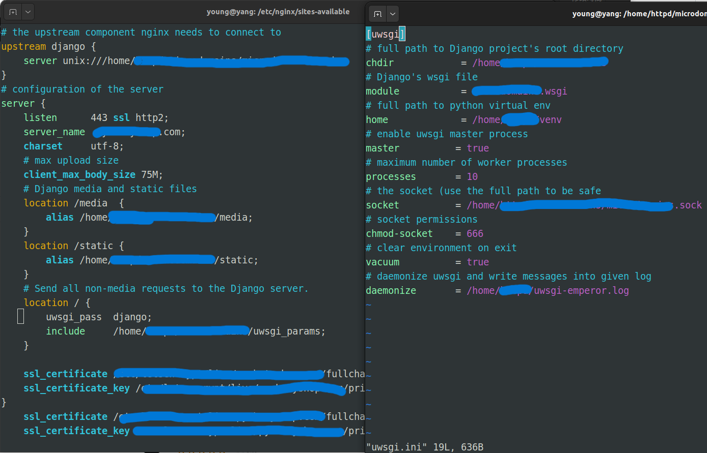
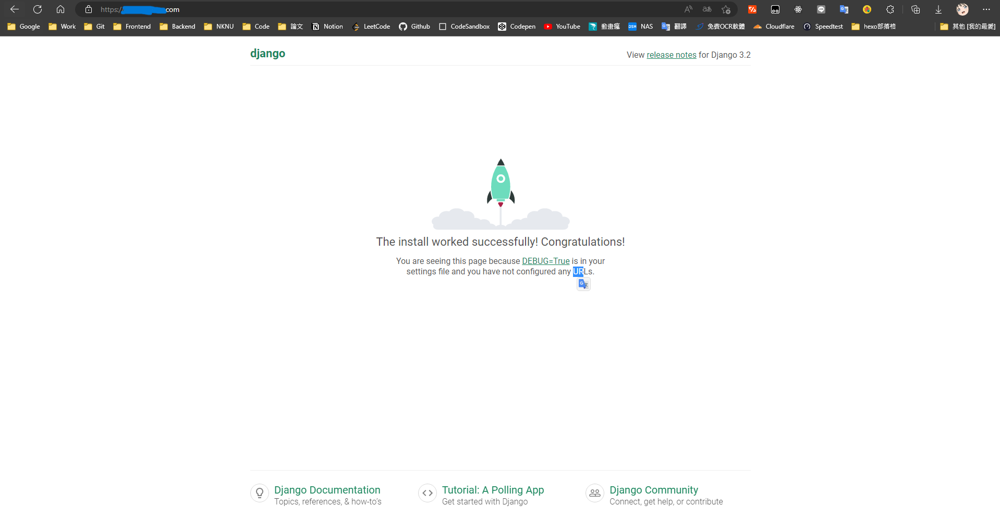

前情提要
部署的方式
網路上部署教學非常多，但高達95%都是教怎麼透過第三方部署平台例如 Heroku,Azuew,GCP…等等，但我就是想架在自己架設的 Ubuntu主機上阿!而關於各式部署方法及各自的優缺點我會再另外寫一篇文章，此篇就不多家贅述
使用的工具、系統
我會全程使用Ubuntu OS去實作，當然若你是用Windows也可以，但建議大家如果想在伺服器上做更多操作及管理，Linux是必備的技能，功能跟穩定性都是直接把Windows壓在地板上磨擦。
本篇教學重點會著重於 Django,uWSGI,Nginx，其餘提到的技術我會在專門另寫文章給大家參考
DNS基礎知識
當使用者輸入Domain Name後，Web必須要先去一台有Domain Name和IP對應資料的主機去查詢這台電腦的 IP，而這台被查詣的主機為Domain Name Server，簡稱 DNS。
Ex:當你輸入www.shopee.com.tw時，Web就會將www.shopee.com.tw傳送最近的DNS Server去做辨識，若查詢有結果，則會傳回這台主機的IP，進而跟它索取資料，若沒查到，就會發生DNS NOT FOUND的情形，而每個Domain Name對應要一組IP，且Domain Name跟IP一樣不會重覆
一般架設網站時不管你是Code from Scratch還是用Wordpress等都需申請DNS指向你的IP，畢竟大家也不可能去記IP位址來找網站吧，申請完後才辦法讓自己以外的人找到你自行定義的網域
購買網域
我購買網域的平台為cloudflare，這是我實作過程中會使用的網址，由於那網址是我到時候會拿來開發其他專案用，避免被當跳板、ddos、所以先碼起來

個人認為他的平台是我用過UI最人性化且支援暗黑模式的(暗黑模式是重點XD)，未來有購買網域需求不妨去看看。
Cloudflare網域管理平台

開始之前
身為Linux使用廚，連進Server第一件事不外乎就是先更新所有套件庫
1 | sudo apt-get update && sudo apt-get upgrade -y |
建立Virtual Enviornment(虛擬環境)
不管是開發小、中、大型專案，建立一個獨立的開發環境是個非常重要的習慣，能讓自己或開發團隊都比較好Debug且不會有一堆不需要的套件而造成需要去追源碼的情況發生。
1 | sudo apt-get install python3-venv |
虛擬環境
建立完後可以檢查是否真的已在虛擬環境中，檢查目前Python是跑全域還是venv裡的

建立Django專案
現在要建立一個開發環境相較於以前真的簡單許多，不需要先架好Server就能直接開始寫Code了
1 | pip install django |
建立完後就先來runserver看是否有問題，預設為:8000 PORT，成功的話應看到以下畫面

測試網域是否運作正常
再來嘗試用你申請好的網域名稱去網頁試跑看看是否成功，若出現 DisallowedHost 錯誤代表你需要去你建立好的Django專案的settings.py的 ALLOWED_HOSTS[‘’] 新增你申請好的網域名稱。
1 | #settings.py |
因為ALLOWED_HOSTS預設是空白的，意思就是除了localhost以外其他的外部IP都無法連上這個網站
開始設置uWSGI
uWSGI(web server gateway interface)可以想像成是Django跟你的Server的中繼站，它是Python程式及如 Django,Flask等和Web服務之間的一種接口，是一種協議/規範
1 | sudo apt-get install python3.10-dev |
我們的最終目標就是要將client端的requests傳送給Nginx並傳遞給暫存socket後，socket會再拿給uWSGI處理最後才終於傳到Django
編寫測試檔
當然我們一步一步來，畢竟只要其中一環出錯，到最後大概也是9.5成的機率是跑不起來的，所以先建立一個test.py來簡單測試一下uwsgi的神奇功能
1 | # test.py |
寫好後再去終端機下uwsgi指令，這部是為了測試uWSGI是否有成功與Django取得聯繫
1 | uwsgi --http :8000 --wsgi-file test.py |
此時你去yourdomain:8000看到 "Hello World!"就代表此時您已經完成1/3的進度啦!
Nginx Server設定
最後終於來到Server端的部分，不多說廢話，直接開始
1 | sudo apt-get install nginx |
此時你在去http://yourdomain查看應能看到Nginx下載成功的 “Welcome to nginx!”頁面
Nginx .conf檔案設定
此時去你的Linux主機的 /etc/nginx/sites-available建立 configuration file,將yourdomain改成你自己的網域名稱
1 | # the upstream component nginx needs to connect to |
一般這時候可以直接開兩個Terminal這樣做的過程邏輯較清晰也比較知道自己在幹嘛，關於static,media,uwsgi_params各自的作用等一下會在進行解釋

SSL憑證
已經2022年了，網路在資安方面基本上都普遍提升了不少，因此只要你能到的網站幾乎都是https://，要知道你的網站若沒有SSL憑證就不會有https://，這樣別人在進你的網站時會被大多數瀏覽器封鎖，在SEO上也會比較難搜尋到你的網站。在.config裡面的那兩行SSL_certificate是申請SSL憑證的證明，這個我會再另外寫一篇講解，因為申請流程也稍微複雜了點
uwsgi_params
要注意這個檔案是要去你的專案目錄底下而不是nginx目錄底下，我的話就是在/home/xxxx/django_project_name這邊建立uwsgi_params，內容如下，意思就是告訴非靜態檔的全部去跑Server
1 | # /home/xxxxx/<project_name>/uwsgi_params |
建立軟連結
告訴Nginx我這個網址要啟用了
1 | sudo ln -s /etc/nginx/sites-available/yourdomains.conf /etc/nginx/sites-enabled/ |
告訴Nginx我們的static_files的位置
1 | """ |
我自己會習慣將靜態檔案位置設定加在最下方
1 | STATIC_URL = '/static/' |
最後執行，這步驟是要告訴Django將我們的靜態檔案Ex:js,css,img…等等全部打包進我們指定的目錄底下。
1 | python manage.py collectstatic |
重啟Nginx Server
1 | sudo -s nginx reload |
最後若成功你應該就會在http://yourdomain/media/xxx.png 看到你放進你指定的目錄的圖片了
讓Nginx, uWSGI, Django成功溝通
讓uWSGI生成socket來達到雙向溝通的目的，這邊的chmod666是為了要開權限給socket他才能寫入，當然Windows沒有權限管理的問題就可以不用加
1 | uwsgi --socket yourdomains.sock --module yourdomains.wsgi --chmod-socket=666 |
撰寫uWSGI執行檔
在正式發佈階段時uwsgi夾帶的參數指令會變得較繁雜，因此我們直接寫一個.ini檔就可避免每次都得打一長串，可能還會有打錯的問題。
1 | [uwsgi] |
之後在執行uwsgi指令只需簡潔的一行即可
1 | uwsgi --ini yourdomains_uwsgi.ini |
成功畫面
最後在去你自己的網址 http://yourdomain.com 就能看到Django初始頁面了!此時你把此網址貼給你的朋友，他也能看到你屬於你自己的網站了，但因為我有透過下一些指令來申請SSL憑證所以我的網址才有https:// ，一般美由額外搞SSL憑證的話，別人在點進去前會被警告甚至瀏覽器根本不會讓他進去

Emperor mode
何謂emperor mode(皇帝模式)，一般會在大型專案開發時遇到，就是當你一個專案底下有大量的apps同時在執行時，他能夠監控每一個被執行的實例(封臣)，對我也覺得很中二XDDD，那他的功能其實真如其名，非常強大
有興趣了解他的功能可以直接去看官方docs => emperor mode
1 | cd /home/xxxxx/venv/md/ |
開機自動執行程式碼
由於就算是中小企業帶有UPS24小時不斷運作的Server，還是會有需要重開機的時候，所以身為工程師就應該避免做相同的事情超過2次，將他寫進rc.local檔讓他開機自動背景執行。
1 | sudo vim /etc/rc.local |
完成!!!
感謝大家的閱讀，若哪裡有問題也歡迎打開右下的聊天室或是直接留言~~!
若您覺得這篇文章對您有幫助，歡迎直接打開右下角的open chat及時聊天或留言或是分享出去讓更多人看到⊂◉‿◉つ~若此文章的thumbnail若使用的範例圖片有涉及侵權問題，請盡速通知站長以在最短時間內下架≦(._.)≧...感激不盡！!